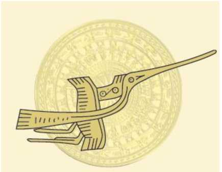
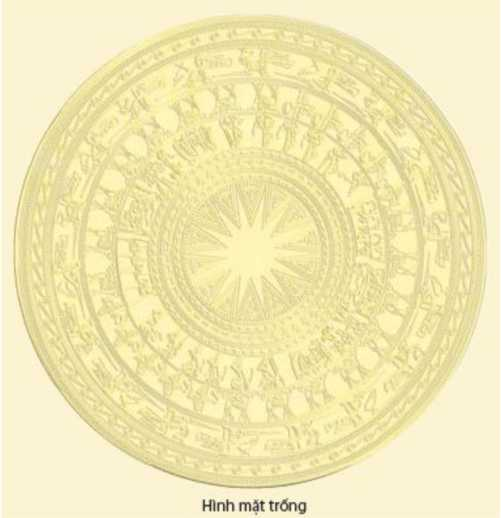

MỌI CHUYỆN Ở ĐÂY, TUY có VẺ LẠ NHƯNG KHÔNG HÃO HUYỀN, THẦN KÌ NHƯNG KHÔNG YÊU MA, HOANG ĐƯỜNG NHƯNG KHÔNG QUÁI ĐẢN. DẤU XƯA CÒN ĐÓ, TẤT CẢ CHỈ CỐT KHUYÊN THEO ĐIỀU THIỆN, NGĂN CẤM ĐIỀU Ác. Bỏ LÒNG DỐI TRÁ VÀ DƯỠNG TÂM CHÂN THỰC... TỨC LÀ CHỈ MONG SAO CHO PHONG TỤC NGÀY MỘT TỐT ĐẸP MÀ THÔI.
HOÀNG GIÁP THƯỢNG THƯ
VŨ QUỲNH
(1452 -1516)
(Bài tựa viết cho sách Lĩnh Nam Chích Quái)

Đầu năm 1993, NGUYỄN KHẮC THUẦN mang đến tặng tôi tập thứ nhất của bộ VIỆT sử GIAI THOẠI và hứa là sẽ viết tất cả tám tập. Đến đầu năm 1995, quả đúng như vậy, NGUYỄN KHẮC THUẦN đã tặng tôi đủ tám cuốn của bộ sách này. Đó là một cố gắng rất đáng khích lệ của người viết và của Nhà Xuất bản Giáo dục Việt Nam. Sách gồm những giai thoại được trích lục từ các bộ chính sử của tổ tiên như: Đại Việt sử lược, Đại Việt sử kí toàn thư, Khâm định Việt sử thông giám cương mục, Đại Nam thực lục, Đại Nam liệt truyện... Mọi giai thoại đều có ghi xuất xứ gọn gàng mà chính xác, đồng thời, lại có thêm lời bàn khá hóm hỉnh, vừa như để giải thích thêm những điều cần giải thích, vừa như để gợi ý cảm nhận và suy nghĩ về lịch sử cho người đọc.
Cách làm của NGUYỄN KHẮC THUẦN không phải là mới nhưng lại rất cần. Nói không phải là mới vì từ nhiều thế kỉ trước, người Trung Quốc đã từng làm và cách nay hàng trăm năm, tổ tiên ta cũng đã từng làm. Nguyễn Dữ (thế kỉ thứ XVI), tác giả của Truyền kì mạn lục là một ví dụ. Đầu những năm hai mươi của thế kỉ này, ÔN NHƯ NGUYỄN VĂN NGỌC và TỬ AN TRẦN LÊ NHÂN với Cổ học tinh hoa cũng là một ví dụ. Nhưng, sở dĩ nói là rất cần vì hầu hết những giai thoại trong bộ sách này, tuy sẵn có trong chính sử xưa, nhưng chưa được giới thiệu một cách đầy đủ và rõ ràng.
Muốn học sử một cách có hệ thống, tất nhiên là phải đọc các bộ chính sử của cả xưa lẫn nay, nhưng, quốc thống dằng dặc với bao sự kiện ngổn ngang, thật hiếm có ai đủ sức thuộc hết được. Cái đọng lại đến muôn đời thường vẫn là những gì độc đáo nhất, kết tinh giá trị đạo lí, triết lí và nhân bản của mỗi thời đó thôi. Giới thiệu kho giai thoại cuả lịch sử nước Việt chính là góp phần giới thiệu những gì thiêng liêng, vĩnh tồn với cộng đồng người Việt, với văn hóa Việt nói chung.
NGUYỄN KHẮC THUẦN từng tâm sự với tôi rằng, cổ học tinh hoa (và một số tác phẩm tương tự khác) tuy rất có giá trị, được đông đảo bạn đọc tiếp nhận một cách nồng nhiệt, nhưng, những chuyện trong sách ấy, từ bối cảnh, sự kiện đến nhân vật... đều là của Trung Quốc. Có cái gì đó, nửa như gần, nửa như xa, thật khó nói. Lẽ đâu, tổ tiên ta chỉ giỏi đánh giặc, còn tư tưởng, triết lí, đạo đức... tất cả chẳng cần bận tâm, bởi đã có khuôn mẫu của Trung Quốc rồi!
VIỆT SỬ GIAI THOẠI là bộ sách mang tên NGUYỄN KHẮC THUẦN nhưng nguồn gốc lại là của tổ tiên. Điều tốt đẹp của cổ nhân chính là tấm gương sáng của đời đời con cháu, chỗ bất cập hoặc thậm chí là chỗ chưa phải của cổ nhân chính là lời răn đe, nhắc nhở hậu thế chớ có dại dột bắt chước theo. Học sử suy cho cùng cũng là học những bài học kinh nghiệm sinh động và bổ ích như thế đó thôi.
Sách được tái bản lần thứ tư (dù số lượng phát hành các lần in trước khá lớn) là một bằng chứng về sự đồng cảm của người đọc đối với tác giả và với Nhà Xuất bản Giáo dục. Tôi viết lời giới thiệu với bạn đọc gần xa cũng là bởi có sự đồng cảm này.
Thành phố Hồ Chí Minh, ngày 16 -1 - 1999.
Giáo sư TRẦN VĂN GIÀU
Bạn đọc yêu quý,
Thế là giờ đây tôi đã có thể thở phào nhẹ nhõm mà thưa rằng, bộ VIỆT sử GIAI THOẠI gồm tám tập đã hoàn thành. Xét thứ tự biên soạn thì đây là tập đầu tiên, nhưng xét thứ tự xuất bản thì đây là tập cuối cùng của cả bộ. Tám cuốn sách được viết trên cơ sở trích dịch từ hàng trăm cuốn sách cổ, nếu không có sự cổ vũ hào phóng của Nhà Xuất bản Giáo dục và của bạn đọc gần xa, tôi không dám tin là mình có thể hoàn tất công việc đúng như kế hoạch đã định. Tự đáy lòng thành của mình, tôi xin được gởi đến Nhà Xuất bản Giáo dục và tất cả bạn đọc những lời chúc mừng tốt đẹp và lời cám ơn sâu sắc.
Bạn đọc yêu quý
VIỆT SỬ GIAI THOẠI là bộ sách khai thác những ghi chép của các bộ chính sử xưa. Tuy nhiên, nếu các tập trước, nguyên tắc này được tuân thủ một cách nghiêm ngặt, thì ở tập này, tập 40 giai thoại từ thời Hùng Vương đến hết thế kỉ thứ X, chúng tôi buộc phải có một vài thay đổi nhỏ. Như bạn đọc đã biết, để viết về thời đại Hùng Vương và An Dương Vương, các bộ chính sử xưa đã dựa chủ yếu vào dã sử hoặc truyền thuyết dân gian. Hẳn nhiên, truyền thuyết dân gian không phải là sử nhưng truyền thuyết dân gian bao giờ cũng được hình thành trên cơ sở của một sự thực lịch sử nào đó. Một khi trong tay mình có đầy đủ những tài liệu mà chính sử xưa đã khai thác, chúng tôi nghĩ rằng, tốt nhất là mình hãy tự giới thiệu lấy, không nên trích lục những gì mà chính sử xưa đã trích lục. Xưa nay, tam sao thất bản vốn là chuyện chẳng hay. Từ cách nghĩ này, chúng tôi đã viết một só giai thoại trên cơ sở trích dịch một số sách như: Lĩnh Nam chích quái, Việt điện u linh tập...v.v.
Tổ tiên có nếp nghĩ riêng của tổ tiên, lấy sở thích hiện đại và hoàn toàn của cá nhân ta để nhận xét thì chắc chắn là sẽ có không ít chuyện chẳng phù hợp và chẳng hay nữa là khác. Nhưng, cái tổ tiên ân cần để lại không phải là sự hào nhoáng bề ngoài mà là cả một kho đạo lí lớn lao và vô giá. cổ nhân nghiêm cẩn mà tế nhị, nhắc nhở chúng ta biết kính những gì đáng kính, biết khinh những gì đáng khinh, biết canh cánh giữ lòng để khi nhắm mắt xuôi tay, ai ai cũng được thanh thản vì chẳng có gì phải ân hận. Đức lớn và lòng thành của tổ tiên ngời ngời toả sáng từ những trang sách xưa, gọn gàng, cụ thể mà sâu sắc.
Cầm riêng tập sách nhỏ này, hoặc giả là cầm trọn bộ tám tập VIỆT sử GIAI THOẠI trên tay, nếu bạn cảm thấy kính trọng tổ tiên hơn thì công ấy thuộc về các cây đại bút thuở trước, ngược lại, nếu bạn cảm thấy nhiêu chỗ chưa được vừa lòng, thì lỗi ấy thuộc về tôi, người đã không lượng được sức mình khi làm công việc khó khăn này. Tôi tin, rất tin ràng bạn sẽ hiểu được chút lòng của tôi kí tải trong những trang viết mộc mạc. Xin được xiết tay bạn và chờ đợi ở bạn những lời đóng góp chân tình.
Thành phố Hô Chí Minh
NGUYỄN KHẮC THUẦN